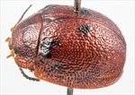
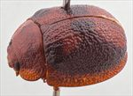
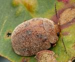
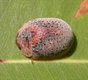
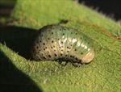
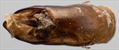
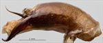
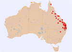

Click on images to enlarge

Female, Bluff, central Queensland

Male, Iron Range, Cape York Peninsula, North Queensland [QM]

Male, Upper Kandanga., S.E. Queensland

Male, Carnarvon N.P., central Queensland

4th instar larva

Aedeagus, dorsal view (Gin Gin, Queensland)

Aedeagus, lateral view (Gin Gin, Queensland)

Distribution (pale-coloured circles indicate records obtained from iNaturalist)
Ta09
Name
Trachymela exarata (Chapuis)
Reference specimen
25-055801b, Millmerran, S.E. Queensland.
Adult Description
Length: ♂ (6.8)7.7–9.2(9.5) mm (n=30), ♀ 7.9–10.0 mm (n=31).
Colouration:
Head: uniformly light- to mid-brown, labrum concolorous with head or lighter, mandibles brown with black tips; antennomeres 1–2 straw-brown, 2–3 grading gradually to a slightly darker shade, 4–11 black.
Pronotum: most commonly uniformly brown, concolorous with head; sometimes a longitudinal slightly or much darker, rarely black, patch is present, centred on discal area and often extending from anterior to posterior margin, which may extend laterally to occupy most of discal area or be narrow but is often broadest at posterior margin.
Scutellum: brown or, rarely, black, concolorous with adjacent region of pronotum.
Elytra: brown, concolorous with lateral marginal area of pronotum, with several darker brown or black patches: one on either side of elytral summit, another extending from anterior elytral margin just above humeral callus towards elytral summit, a third, often present, may be an interrupted band of darker colouration from the humeral callus towards apex along margin of elytral disc or confined to a single dark patch just posterior to centre of discal margin; in some specimens the rows of small elevated verrucae are fully or partially dark brown or black, punctures concolorous with or fractionally darker than interstices, humeral callus darker than surrounding area.
Venter & Legs: light- to mid-brown with only edges of sternites sometimes fractionally darker, inside surface of elytral epipleura brown.
Cuticular Wax: colour uniformly greyish brown, always present as a thin, relatively uniform coating, often just a sprinkle, with the dark markings on the elytra (and pronotum, if present) always visible through it.
Morphology:
Head: surface rough, with the relatively fine punctures mostly obscured by roughly longitudinal wrinkles. Antennae relatively long in both sexes (AL/BL: ♂ 46–50%, ♀ 42–48%), antennomeres noticeably flattened and slightly serrate, often more so in females.
Pronotum: almost evenly curved transversely or very slightly explanate, foveal depression absent or very indistinct, discal area with surface quite rough, punctures rather large but often not well defined, rarely not discernible in roughness of surface, somewhat unevenly and moderately densely to sparsely (spacing ≈ 2–4 pd) distributed, becoming coarser and better defined towards lateral margins, much smaller punctures are scattered among the larger ones. Front margins join lateral margins in a smoothly rounded right-angle, with lateral margin initially almost straight for a short section and then curving smoothly and gradually towards rear margin, broadest about 2/3 of distance to posterolateral angle.
Scutellum: smooth or rough textured, with at most a sparse scatter of small punctures.
Elytra: surface evenly curved and relatively smooth, punctures evenly distributed and clearly defined in anterior two-thirds within convex interstices, more closely spaced and granular towards apex, several longitudinal rows of small elevated verrucae each with a small central puncture are present but sometimes rather obscure, elytral suture carinate in posterior third, surface continuous under humeral callus, submarginal sulcus well defined, especially in posterior half. Vertical extension of epipleura considerable (HCE/PW = 0.36–0.42).
Venter: prosternal process almost parallel or narrowing anteriorly, lightly closed anteriorly, a sparse scatter of long setae present along prosternal process, at most a single long seta present on each of anterior, median and posterior trochanters; front edge of metaventrite beveled, slightly curved; inner edge of posterior of epipleurae lacking setae.
Male Genitalia (Aedeagus):
Dimensions: long and very large (LPE/BL = 43–51%).
Dorsal view: basal section very short, truncate, central section approximately parallel-sided or very slightly sinuate (WPE/LPE = 0.33–0.36), sides in apical section converge to apex in a roughly straight line, tip triangular, dorsal surface sclerotized and convex laterally, dorso-median channel absent, ostium very large.
Lateral view: very thick in central section, then rapidly thinning towards apex, ventral surface quite evenly and continually curved over whole length, tip strongly deflexed.
Immature Stages
Eggs: length 2.25–2.45 mm, width 1.20–1.30 mm; light yellow to yellow-brown, completely smooth, very slightly bent. Eggs are laid in batches of 2–6 in a staggered row, with individual eggs slightly separated.
Larvae: 2nd instar: head capsule and legs black, rest of body (thorax and abdomen, including terminal abdominal segments) green; several very small, black tubercles on each segment, with the larger of these being along the lateral margin of insect. 3rd/4th instar: head capsule black (somewhat paler around mouthparts), legs mainly black, rest of body green (including terminal abdominal segment); small, but conspicuous, black tubercles on each segment, with the largest being along lateral margin – just below spiracles. 4th instar larvae turn light-brown just before entering the pre-pupal stage.
Similar species
Ta08: occurs in north-western Australia. It tends to be larger and lacks the truncate basal section of aedeagus.
Ta01: an abundant species that overlaps broadly with the distribution of Ta09. It is similar in size and dorsal black markings to Ta09 but easily distinguishable from that species by the shape of the outer antennomeres, which are not flattened.
Notes
Taxonomy: Identified as Trachymela exarata (Chapuis) by comparison with the holotype in the RBINS. Note that Trachymela asperula (Chapuis) and Trachymela cancellata (Chapuis) are almost certainly synonyms of this species.
Host Associations: Found on bloodwoods (Corymbia sp. s.l.), often on suckers and regrowth near the ground. A single record from Eucalyptus is likely a host misidentification.
Morphological Variation: Specimens from southern Queensland and northern New South Wales usually have distinct rows of brown tubercles on the elytra. Specimens from Iron Range (Cape York Peninsula, Queensland) show differences in colouration, with many (but not all) being somewhat paler in general colour than typical specimens of Ta09. These also have larger expanses of dark colouration, with the dark patches that are present on typical Ta09 specimens expanded into a much larger area of dark or even black colouring. A single aedeagus has so far been dissected from these specimens; it is very similar in size and shape to that of typical Ta09, but tends to be expanded around the ostium, has a slightly smaller spatulum and is not as broad around the middle. A single male from Proserpine [1998-0525] is exceptionally small but otherwise is typical for this species in its morphology.
Copyright © 2026. All rights reserved.
{kind=link}
![Male, Iron Range, Cape York Peninsula, North Queensland [QM]](assets/image/Ta09/Ta09_AGM-097_SM.jpg){kind=link}
{kind=link}
{kind=link}
{kind=link}
{kind=link}
{kind=link}
{kind=link}